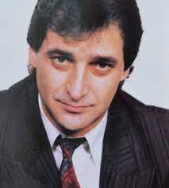
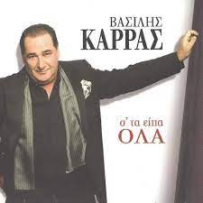
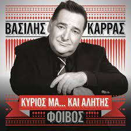
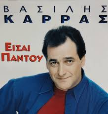

Γενικές πληροφορίες
Ο Βασίλης Καρράς (πραγματικό όνομα: Βασίλειος Κεσογλίδης, Κοκκινοχώρι Καβάλας, 12 Νοεμβρίου 1953 - Θεσσαλονίκη, 24 Δεκεμβρίου 2023) ήταν Έλληνας λαϊκός τραγουδιστής,
συνθέτης και στιχουργός,ο οποίος υπήρξε ένας από τους δημοφιλέστερους και πιο αγαπητούς ερμηνευτές των τελευταίων δεκαετιών στο ελληνικό τραγούδι.
Προσωπική ζωή
Γεννήθηκε στο Κοκκινοχώρι Καβάλας στις 12 Νοεμβρίου 1953. Είχε δύο αδέρφια, τον Δαμιανό και την Αναστασία. Όταν ήταν 10 ετών μετακόμισε με την οικογένειά του στη Θεσσαλονίκη.
Παράλληλα εργαζόταν ως μηχανικός αυτοκινήτων, καθώς το αυτοκίνητο αποτελούσε την δεύτερη μεγάλη του αγάπη μετά το τραγούδι.
Επίσης, εργάστηκε στο μηχανοστάσιο του ΟΣΕ στη Θεσσαλονίκη, γεγονός που αποτυπώνεται στο τραγούδι «Εγώ αγάπη μου, εγώ».Παντρεύτηκε το 1973 τη Χριστίνα Κεσογλίδη και μαζί απέκτησαν μια κόρη, την Ειρήνη.
Απεβίωσε σε ηλικία 70 ετών, παραμονή Χριστουγέννων 2023, αφότου υπέστη ανακοπή καρδιάς στο Διαβαλκανικό Νοσοκομείο Θεσσαλονίκης,
όντας προσβεβλημένος από COVID-19 και αντιμετωπίζοντας καρκίνο του πνεύμονα.Η σορός του τέθηκε σε λαϊκό προσκύνημα στον Ιερό Ναό της του Θεού Σοφίας Θεσσαλονίκης στις 26 Δεκεμβρίου.
Κηδεύτηκε στις 27 Δεκεμβρίου σύμφωνα με την τελευταία του επιθυμία στην γενέτειρα του, το ΚοκκινοχώριΚαβάλας
Καριέρα
Το 1969, σε ηλικία 16 ετών, έκανε την πρώτη του μουσική εμφάνιση στο νυχτερινό κέντρο «Πρόσφυγας» στον Εύοσμο Θεσσαλονίκης.
Ξεκίνησε την επαγγελματική του καριέρα στη Θεσσαλονίκη. Η μεγαλύτερη εμπορική του επιτυχία ήταν ο δίσκος Μ' έχεις Κάνει Αλήτη, που σημείωσε πωλήσεις πάνω από 180.000 αντίτυπα,
σε στίχους και μουσική του Μιχάλη Ρακιντζή. Οι δίσκοι έχουν γίνει χρυσοί και πλατινένιοι.
Είχε συνεργαστεί με αρκετούς συνθέτες και στιχουργούς, όπως ο Μιχάλης Ρακιντζής, ο Φοίβος, ο Γιώργος Θεοφάνους, ο Αλέκος Χρυσοβέργης, ο Σπύρος Γιατράς,
ο Χάρης Κωστόπουλος, ο Μάνος Ξυδούς, ο Δημήτρης Ρακιτζής, η Εύη Δρούτσα, ο Πάνος Φαλάρας, ο Χρήστος Δάντης, ο Κυριάκος Παπαδόπουλος και ο Ηλίας Φιλίππου,
ο Μιχάλης Χατζηγιάννης, ο Χρήστος Νικολόπουλος και πολλοί άλλοι.
Είχε κάνει ντουέτα με πολλούς τραγουδιστές όπως η Μαριάνθη Κεφάλα, οι Πυξ Λαξ, η Κωνσταντίνα, η Άντζελα Δημητρίου, ο Τόλης Βοσκόπουλος, ο Νίκος Ζωιδάκης,
η Καίτη Γαρμπή, η Δέσποινα Βανδή, η Έλλη Κοκκίνου, η Ειρήνη Μερκούρη, η Πέγκυ Ζήνα, η Πάολα, ο Παντελής Παντελίδης και τέλος με τον Γιώργο Κακοσαίο.
Με τους περισσότερους από αυτούς συνεργάστηκε σε ζωντανά προγράμματα.
Επίσης, ήταν συνθέτης και στιχουργός και είχε γράψει τραγούδια για πολλούς Έλληνες τραγουδιστές.
Βραβεία
Το 2017, ο Καρράς κατάφερε να κατακτήσει μια θέση στο βιβλίο Ρεκόρ Γκίνες, εξ αιτίας μιας sold out συναυλίας που πραγματοποίησε στη Σόφια της Βουλγαρίας.
Ο τραγουδιστής κατάφερε να μαζέψει στο Στάδιο ARENA 17.000 άτομα, ενώ όπως αναφέρουν οι πληροφορίες, επιπλέον 5.000 άτομα δεν κατάφεραν να βρουν εισιτήριο.
Όντας λοιπόν ο πρώτος Ευρωπαίος που κατάφερε να γεμίσει το συγκεκριμένο στάδιο στη Βουλγαρία, πήρε μια θέση στο βιβλίο των Ρεκόρ Γκίνες,
κατορθώνοντας κάτι που κανένας άλλος τραγουδιστής δεν είχε κάνει μέχρι τότε.

  
Δεκαετία 1979-1989
1979 Παράγκες Και Παλάτια Vasipap
1980 Αλησμόνητες Ώρες Vasipap 268 LP- CD
1982 Τι Λες Καλέ Vasipap 32
1984 Να Θυμηθούμε Τα Παλιά Cosmosrecords LP301
1984 Γιατί να χωριστούμε Vasipap 368 LP
1985 Μη χαθείς Cosmosrecords
1987 Απ' τη Θεσσαλονίκη με αγάπη Vasipap 458 LP
1988 Αποκλειστικά για σένα Vasipap 452 LP
1989 Αυτή τη Νύχτα Vasipap 449 LP &11 CD
Δεκαετία 1990-1999
1990 10 Χρόνια Βασίλης Καρράς Vasipap 465 LP &15 CD
1990 Είσαι παντού (Vasipap 474 LP - CD)
1991 Λέγε ό,τι Θες (Minos 981 LP - CD)
1991 Αστέρια Του Βορρά (Vasipap 498 LP - CD)
1992 Τραγούδια από το Συρτάρι (Vasipap 522 LP - 27 CD)
1992 Δεν Πάω Πουθενά (Minos 478707 LP-CD)
1993 Νύχτα Ξελογιάστρα (Vasipap 539/40 2 LP & 45/46 2 CD)
1993 Πως Τολμάς (Μinos 480051 LP - CD)
1994 Στη Σαλονίκη Μια Φορά (Minos 480249 LP - CD)
1994 Χρέωσέ το σε Μένα (Minos 480594 LP - CD)
1995 Φταις Εσύ (Minos 836933 LP - CD)
1995 Μια βραδιά στα Νέα Δειλινά(live) (Minos 846993 LP - CD)
1996 Τηλεφώνησέ μου (Minos 855238 LP - CD)
1997 Μ' έχεις κάνει αλήτη (Minos 493568 CD)
1998 Φαινόμενο (Minos CD Single)
1999 Επιστρέφω (Minos CD)
1999 Αυτοπεποίθηση (Minos CD)
1999 20 Χρόνια Βασίλης Καρράς (Minos CD)
Δεκαετία 2000-2010
2000 Οι Μεγαλύτερες Επιτυχίες του Β. Καρρά 1991-1999 (Minos CD)
2001 Γύρισε (Minos CD)
2002 Τα Δικά μου Τραγούδια (Minos CD)
2002 Λόγια της Νύχτας (Minos CD)
2003 Πάρε το Δρόμο κι Έλα (Minos CD)
2004 Τα Καλύτερα Τραγούδια του Β. Καρρά (Minos CD)
2004 Βασίλης Καρράς 1991 - 2003 on DvD (DvD)
2005 Όλα Ένα Ψέμα (Virus Music)
2007 Όνειρα (Virus Music)
2007 Όλα μου τα χρόνια live (Sony BMG)
2009 Όπως παλιά SEVEN
2009 Live Espresso
2010 Αχ Μοναξιά Μου SEVEN
2010 Σ' τα Είπα Όλα (Επτά)
Δεκαετία 2010-2023
2011 Έτσι Λαϊκά (Universal)
2012 Summerlife 2012 • Βασίλης Καρράς Live (Not On Label)
2012 Teatro Music Hall (Next Records)
2013 Κύριος μα...και αλήτης (The Spicy)
2014 Επιλογή μου (Minos EMI)
2014 Τζιβαέρι μου (Minos EMI)
2015 Απ' Το Βορρά Μέχρι Το Νότο (Minos EMI)
2016 Με Αγάπη Βασίλης Καρράς-BEST OF (Minos EMI)
2016 ΤΑ ΚΑΛΥΤΕΡΑ ΤΑΞΙΔΙΑ (Minos EMI)
2017 Αλήτη Με Λένε (Minos EMI)
2020 Ρωτάς Αν Σ' Έχω Ερωτευθεί (Minos EMI)
2021 Νύχτα Γενάρη (Minos EMI)
2022 Φοιτητές (Ντουέτο με τον Γιώργο Κακοσαίο) (Μinos EMI)
2023 Είμαι Εδώ (Minos EMI)